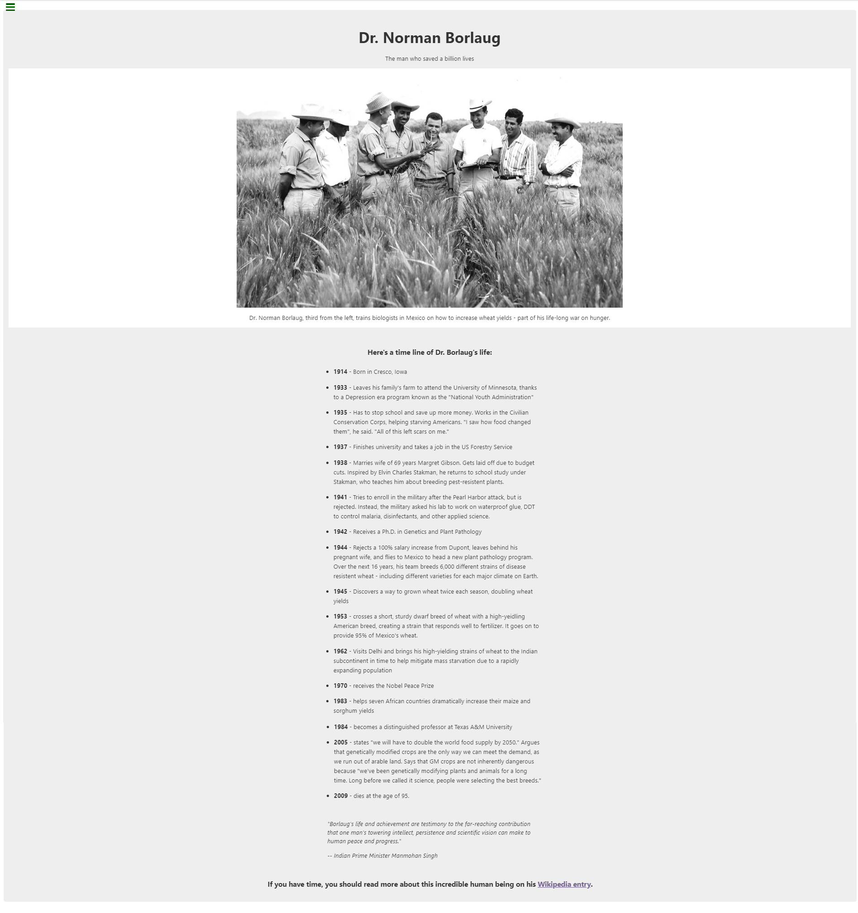
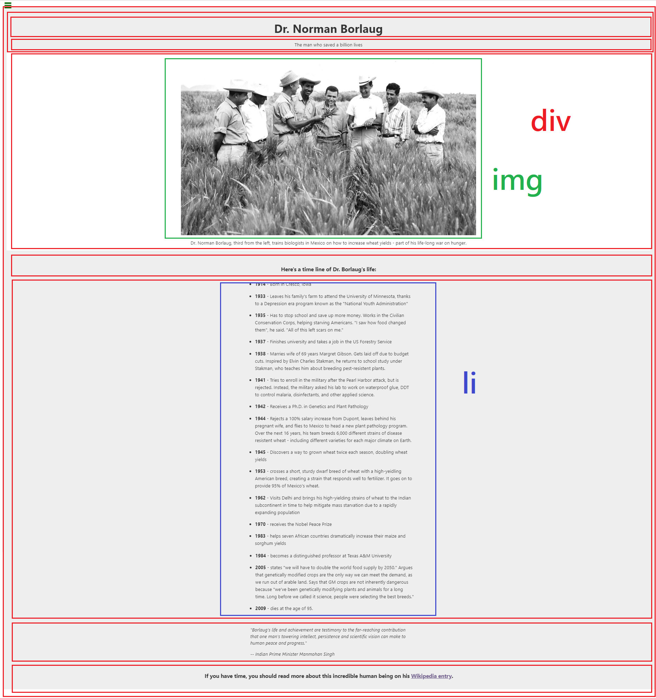

<!DOCTYPE html>
<html>
<head><meta name="generator" content="Hexo 3.8.0">
  <meta charset="utf-8">
  

  
  <title>切版練習 | yencheng&#39;s code blog</title>
  <meta name="viewport" content="width=device-width, initial-scale=1, maximum-scale=1">
  <meta name="description" content="參考現成的網站模仿實現出一樣的 layout，此次參考的範例為FreeCodeCamp的 學習範例以下圖片為網站的整體預覽，第一眼大致上得出下一張圖的 html 架構            最外圍用一個 div 包住內部所有的 div ，此 div 可以設定為範例中的灰色底色，標題與標題下面的文字先用一個div包住，在個別用div包住123456&amp;lt;div id = &quot;container&quot;&amp;">
<meta name="keywords" content="html,css,layout,切版">
<meta property="og:type" content="article">
<meta property="og:title" content="切版練習">
<meta property="og:url" content="http://yencheng.com/2019/06/09/layout/index.html">
<meta property="og:site_name" content="yencheng&#39;s code blog">
<meta property="og:description" content="參考現成的網站模仿實現出一樣的 layout，此次參考的範例為FreeCodeCamp的 學習範例以下圖片為網站的整體預覽，第一眼大致上得出下一張圖的 html 架構            最外圍用一個 div 包住內部所有的 div ，此 div 可以設定為範例中的灰色底色，標題與標題下面的文字先用一個div包住，在個別用div包住123456&amp;lt;div id = &quot;container&quot;&amp;">
<meta property="og:locale" content="zh">
<meta property="og:image" content="http://yencheng.com/2019/06/09/layout/p1.png">
<meta property="og:image" content="http://yencheng.com/2019/06/09/layout/p2.png">
<meta property="og:updated_time" content="2019-06-09T09:11:40.399Z">
<meta name="twitter:card" content="summary">
<meta name="twitter:title" content="切版練習">
<meta name="twitter:description" content="參考現成的網站模仿實現出一樣的 layout，此次參考的範例為FreeCodeCamp的 學習範例以下圖片為網站的整體預覽，第一眼大致上得出下一張圖的 html 架構            最外圍用一個 div 包住內部所有的 div ，此 div 可以設定為範例中的灰色底色，標題與標題下面的文字先用一個div包住，在個別用div包住123456&amp;lt;div id = &quot;container&quot;&amp;">
<meta name="twitter:image" content="http://yencheng.com/2019/06/09/layout/p1.png">
  
    <link rel="alternate" href="/atom.xml" title="yencheng&#39;s code blog" type="application/atom+xml">
  
  
    <link rel="icon" href="/favicon.png">
  
  
    <link href="//fonts.googleapis.com/css?family=Source+Code+Pro" rel="stylesheet" type="text/css">
  
  <link rel="stylesheet" href="/css/style.css">
</head>
</html>
<body>
  <div id="container">
    <div id="wrap">
      <header id="header">
  <div id="banner"></div>
  <div id="header-outer" class="outer">
    <div id="header-title" class="inner">
      <h1 id="logo-wrap">
        <a href="/" id="logo">yencheng&#39;s code blog</a>
      </h1>
      
    </div>
    <div id="header-inner" class="inner">
      <nav id="main-nav">
        <a id="main-nav-toggle" class="nav-icon"></a>
        
          <a class="main-nav-link" href="/">Home</a>
        
          <a class="main-nav-link" href="/archives">Archives</a>
        
      </nav>
      <nav id="sub-nav">
        
          <a id="nav-rss-link" class="nav-icon" href="/atom.xml" title="RSS Feed"></a>
        
        <a id="nav-search-btn" class="nav-icon" title="Search"></a>
      </nav>
      <div id="search-form-wrap">
        <form action="//google.com/search" method="get" accept-charset="UTF-8" class="search-form"><input type="search" name="q" class="search-form-input" placeholder="Search"><button type="submit" class="search-form-submit">&#xF002;</button><input type="hidden" name="sitesearch" value="http://yencheng.com"></form>
      </div>
    </div>
  </div>
</header>
      <div class="outer">
        <section id="main"><article id="post-layout" class="article article-type-post" itemscope itemprop="blogPost">
  <div class="article-meta">
    <a href="/2019/06/09/layout/" class="article-date">
  <time datetime="2019-06-09T07:52:01.000Z" itemprop="datePublished">2019-06-09</time>
</a>
    
  <div class="article-category">
    <a class="article-category-link" href="/categories/切版/">切版</a>
  </div>

  </div>
  <div class="article-inner">
    
    
      <header class="article-header">
        
  
    <h1 class="article-title" itemprop="name">
      切版練習
    </h1>
  

      </header>
    
    <div class="article-entry" itemprop="articleBody">
      
        <hr>
<h3 id="參考現成的網站模仿實現出一樣的-layout，此次參考的範例為FreeCodeCamp的-學習範例"><a href="#參考現成的網站模仿實現出一樣的-layout，此次參考的範例為FreeCodeCamp的-學習範例" class="headerlink" title="參考現成的網站模仿實現出一樣的 layout，此次參考的範例為FreeCodeCamp的 學習範例"></a>參考現成的網站模仿實現出一樣的 layout，此次參考的範例為FreeCodeCamp的 <a href="https://codepen.io/freeCodeCamp/full/zNqgVx" target="_blank" rel="noopener">學習範例</a></h3><h3 id="以下圖片為網站的整體預覽，第一眼大致上得出下一張圖的-html-架構"><a href="#以下圖片為網站的整體預覽，第一眼大致上得出下一張圖的-html-架構" class="headerlink" title="以下圖片為網站的整體預覽，第一眼大致上得出下一張圖的 html 架構"></a>以下圖片為網站的整體預覽，第一眼大致上得出下一張圖的 html 架構</h3><div align="center">
        
</div>

<h4 id="最外圍用一個-div-包住內部所有的-div-，此-div-可以設定為範例中的灰色底色，標題與標題下面的文字先用一個div包住，在個別用div包住"><a href="#最外圍用一個-div-包住內部所有的-div-，此-div-可以設定為範例中的灰色底色，標題與標題下面的文字先用一個div包住，在個別用div包住" class="headerlink" title="最外圍用一個 div 包住內部所有的 div ，此 div 可以設定為範例中的灰色底色，標題與標題下面的文字先用一個div包住，在個別用div包住"></a>最外圍用一個 div 包住內部所有的 div ，此 div 可以設定為範例中的灰色底色，標題與標題下面的文字先用一個div包住，在個別用div包住</h4><figure class="highlight html"><table><tr><td class="gutter"><pre><span class="line">1</span><br><span class="line">2</span><br><span class="line">3</span><br><span class="line">4</span><br><span class="line">5</span><br><span class="line">6</span><br></pre></td><td class="code"><pre><span class="line"><span class="tag">&lt;<span class="name">div</span> <span class="attr">id</span> = <span class="string">"container"</span>&gt;</span></span><br><span class="line">    <span class="tag">&lt;<span class="name">div</span>&gt;</span></span><br><span class="line">        <span class="tag">&lt;<span class="name">div</span> <span class="attr">id</span> = <span class="string">"topic"</span>&gt;</span><span class="tag">&lt;<span class="name">h1</span>&gt;</span>Dr. Norman Borlaug<span class="tag">&lt;/<span class="name">h1</span>&gt;</span><span class="tag">&lt;/<span class="name">div</span>&gt;</span></span><br><span class="line">        <span class="tag">&lt;<span class="name">div</span> <span class="attr">id</span>=<span class="string">"subtopic"</span>&gt;</span><span class="tag">&lt;<span class="name">p</span>&gt;</span>The man who saved a billion lives<span class="tag">&lt;/<span class="name">p</span>&gt;</span><span class="tag">&lt;/<span class="name">div</span>&gt;</span></span><br><span class="line">    <span class="tag">&lt;/<span class="name">div</span>&gt;</span></span><br><span class="line"><span class="tag">&lt;/<span class="name">div</span>&gt;</span></span><br></pre></td></tr></table></figure>

<h4 id="為了讓-div-置中，我預設-id-為-container-div-的-css-margin-屬性為-0-auto，並設定此-div-內的所有文字置中，如果後面需要不用置中的文字只要用新的-css-覆蓋即可，標題離-div-頂部有一個空隙，此處用-padding-top-達成相同的效果"><a href="#為了讓-div-置中，我預設-id-為-container-div-的-css-margin-屬性為-0-auto，並設定此-div-內的所有文字置中，如果後面需要不用置中的文字只要用新的-css-覆蓋即可，標題離-div-頂部有一個空隙，此處用-padding-top-達成相同的效果" class="headerlink" title="為了讓 div 置中，我預設 id 為 container div 的 css margin 屬性為 0 auto，並設定此 div 內的所有文字置中，如果後面需要不用置中的文字只要用新的 css 覆蓋即可，標題離 div 頂部有一個空隙，此處用 padding-top 達成相同的效果"></a>為了讓 div 置中，我預設 id 為 container div 的 css margin 屬性為 0 auto，並設定此 div 內的所有文字置中，如果後面需要不用置中的文字只要用新的 css 覆蓋即可，標題離 div 頂部有一個空隙，此處用 padding-top 達成相同的效果</h4><figure class="highlight css"><table><tr><td class="gutter"><pre><span class="line">1</span><br><span class="line">2</span><br><span class="line">3</span><br><span class="line">4</span><br><span class="line">5</span><br><span class="line">6</span><br><span class="line">7</span><br><span class="line">8</span><br><span class="line">9</span><br><span class="line">10</span><br><span class="line">11</span><br><span class="line">12</span><br></pre></td><td class="code"><pre><span class="line"><span class="selector-id">#container</span>&#123;</span><br><span class="line">    <span class="attribute">margin</span>: <span class="number">0</span> auto;</span><br><span class="line">    <span class="attribute">width </span>:<span class="number">95%</span>;</span><br><span class="line">    <span class="attribute">background-color</span>:<span class="number">#EEEEEE</span>;</span><br><span class="line">    <span class="attribute">text-align</span>: center;</span><br><span class="line">    <span class="attribute">line-height</span>:<span class="number">30px</span>;</span><br><span class="line">    <span class="attribute">color</span>:<span class="number">#333333</span>;</span><br><span class="line">&#125;</span><br><span class="line"><span class="selector-id">#topic</span>&#123;</span><br><span class="line">    <span class="attribute">padding-top</span>:<span class="number">10px</span>;</span><br><span class="line">    <span class="attribute">font-size</span>: <span class="number">20px</span>;</span><br><span class="line">&#125;</span><br></pre></td></tr></table></figure>

<h4 id="圖片包含下面的文字也一樣用div包住，接著使用-img-標籤引入圖片，下方文字使用-p-標籤"><a href="#圖片包含下面的文字也一樣用div包住，接著使用-img-標籤引入圖片，下方文字使用-p-標籤" class="headerlink" title="圖片包含下面的文字也一樣用div包住，接著使用 img 標籤引入圖片，下方文字使用 p 標籤"></a>圖片包含下面的文字也一樣用div包住，接著使用 img 標籤引入圖片，下方文字使用 p 標籤</h4><figure class="highlight html"><table><tr><td class="gutter"><pre><span class="line">1</span><br><span class="line">2</span><br><span class="line">3</span><br><span class="line">4</span><br><span class="line">5</span><br><span class="line">6</span><br><span class="line">7</span><br><span class="line">8</span><br><span class="line">9</span><br><span class="line">10</span><br><span class="line">11</span><br></pre></td><td class="code"><pre><span class="line"><span class="tag">&lt;<span class="name">div</span> <span class="attr">id</span> = <span class="string">"container"</span>&gt;</span></span><br><span class="line">    <span class="tag">&lt;<span class="name">div</span>&gt;</span></span><br><span class="line">        <span class="tag">&lt;<span class="name">div</span> <span class="attr">id</span> = <span class="string">"topic"</span>&gt;</span><span class="tag">&lt;<span class="name">h1</span>&gt;</span>Dr. Norman Borlaug<span class="tag">&lt;/<span class="name">h1</span>&gt;</span><span class="tag">&lt;/<span class="name">div</span>&gt;</span></span><br><span class="line">        <span class="tag">&lt;<span class="name">div</span> <span class="attr">id</span>=<span class="string">"subtopic"</span>&gt;</span><span class="tag">&lt;<span class="name">p</span>&gt;</span>The man who saved a billion lives<span class="tag">&lt;/<span class="name">p</span>&gt;</span><span class="tag">&lt;/<span class="name">div</span>&gt;</span></span><br><span class="line">    <span class="tag">&lt;/<span class="name">div</span>&gt;</span></span><br><span class="line">    <span class="tag">&lt;<span class="name">div</span> <span class="attr">id</span> =<span class="string">"pic"</span>&gt;</span></span><br><span class="line">        <span class="tag">&lt;<span class="name">img</span> <span class="attr">src</span>=<span class="string">"p1.jpg"</span>&gt;</span></span><br><span class="line">        <span class="tag">&lt;<span class="name">p</span>&gt;</span>Dr. Norman Borlaug, third from the left, trains biologists in Mexico on how to increase wheat </span><br><span class="line">            yields - part of his life-long war on hunger.<span class="tag">&lt;/<span class="name">p</span>&gt;</span></span><br><span class="line">    <span class="tag">&lt;/<span class="name">div</span>&gt;</span></span><br><span class="line"><span class="tag">&lt;/<span class="name">div</span>&gt;</span></span><br></pre></td></tr></table></figure>

<h4 id="為了讓圖片置中，將包住-img-的-div-設定-margin為-0-auto-以及-img-本身的-margin-設定為-auto，因為-img-標籤預設的-display-為-inline-，為了讓後面的文字能直接顯示在正下方，必須額外設定-img-的-display-為-block"><a href="#為了讓圖片置中，將包住-img-的-div-設定-margin為-0-auto-以及-img-本身的-margin-設定為-auto，因為-img-標籤預設的-display-為-inline-，為了讓後面的文字能直接顯示在正下方，必須額外設定-img-的-display-為-block" class="headerlink" title="為了讓圖片置中，將包住 img 的 div 設定 margin為 0 auto 以及 img 本身的 margin 設定為 auto，因為 img 標籤預設的 display 為 inline ，為了讓後面的文字能直接顯示在正下方，必須額外設定 img 的 display 為 block"></a>為了讓圖片置中，將包住 img 的 div 設定 margin為 0 auto 以及 img 本身的 margin 設定為 auto，因為 img 標籤預設的 display 為 inline ，為了讓後面的文字能直接顯示在正下方，必須額外設定 img 的 display 為 block</h4><figure class="highlight css"><table><tr><td class="gutter"><pre><span class="line">1</span><br><span class="line">2</span><br><span class="line">3</span><br><span class="line">4</span><br><span class="line">5</span><br><span class="line">6</span><br><span class="line">7</span><br><span class="line">8</span><br><span class="line">9</span><br></pre></td><td class="code"><pre><span class="line"><span class="selector-id">#pic</span>&#123;</span><br><span class="line">    <span class="attribute">background-color</span>: <span class="number">#FFFFFF</span>;</span><br><span class="line">    <span class="attribute">width</span>:<span class="number">95%</span>;</span><br><span class="line">    <span class="attribute">margin</span>: <span class="number">0</span> auto;</span><br><span class="line">&#125;</span><br><span class="line"><span class="selector-tag">img</span>&#123;</span><br><span class="line">    <span class="attribute">display</span>: block;</span><br><span class="line">    <span class="attribute">margin</span>: auto;</span><br><span class="line">&#125;</span><br></pre></td></tr></table></figure>

<h4 id="接著為時間軸的標題以及時間軸的列表還有時間軸後面的引言，三者都個別使用-div-包住後，外圍在使用一個-div-包住，時間軸列表使用-ul-li-標籤，年號粗體的部分可以用-strong-標籤包起來"><a href="#接著為時間軸的標題以及時間軸的列表還有時間軸後面的引言，三者都個別使用-div-包住後，外圍在使用一個-div-包住，時間軸列表使用-ul-li-標籤，年號粗體的部分可以用-strong-標籤包起來" class="headerlink" title="接著為時間軸的標題以及時間軸的列表還有時間軸後面的引言，三者都個別使用 div 包住後，外圍在使用一個 div 包住，時間軸列表使用 ul li 標籤，年號粗體的部分可以用 strong 標籤包起來"></a>接著為時間軸的標題以及時間軸的列表還有時間軸後面的引言，三者都個別使用 div 包住後，外圍在使用一個 div 包住，時間軸列表使用 ul li 標籤，年號粗體的部分可以用 strong 標籤包起來</h4><figure class="highlight html"><table><tr><td class="gutter"><pre><span class="line">1</span><br><span class="line">2</span><br><span class="line">3</span><br><span class="line">4</span><br><span class="line">5</span><br><span class="line">6</span><br><span class="line">7</span><br><span class="line">8</span><br><span class="line">9</span><br><span class="line">10</span><br><span class="line">11</span><br><span class="line">12</span><br><span class="line">13</span><br><span class="line">14</span><br><span class="line">15</span><br><span class="line">16</span><br><span class="line">17</span><br><span class="line">18</span><br></pre></td><td class="code"><pre><span class="line"><span class="tag">&lt;<span class="name">div</span> <span class="attr">id</span>=<span class="string">"content"</span>&gt;</span></span><br><span class="line">    <span class="tag">&lt;<span class="name">div</span>&gt;</span></span><br><span class="line">        <span class="tag">&lt;<span class="name">h2</span>&gt;</span>Here's a time line of Dr. Borlaug's life:<span class="tag">&lt;/<span class="name">h2</span>&gt;</span></span><br><span class="line">    <span class="tag">&lt;/<span class="name">div</span>&gt;</span></span><br><span class="line">    <span class="tag">&lt;<span class="name">div</span> <span class="attr">id</span>=<span class="string">"timeline"</span>&gt;</span></span><br><span class="line">        <span class="tag">&lt;<span class="name">ul</span>&gt;</span></span><br><span class="line">            <span class="tag">&lt;<span class="name">li</span>&gt;</span><span class="tag">&lt;<span class="name">strong</span>&gt;</span>1943<span class="tag">&lt;/<span class="name">strong</span>&gt;</span><span class="tag">&lt;/<span class="name">li</span>&gt;</span></span><br><span class="line">            <span class="tag">&lt;<span class="name">li</span>&gt;</span><span class="tag">&lt;/<span class="name">li</span>&gt;</span></span><br><span class="line">            <span class="tag">&lt;<span class="name">li</span>&gt;</span><span class="tag">&lt;/<span class="name">li</span>&gt;</span></span><br><span class="line">            <span class="tag">&lt;<span class="name">li</span>&gt;</span><span class="tag">&lt;/<span class="name">li</span>&gt;</span></span><br><span class="line">        <span class="tag">&lt;/<span class="name">ul</span>&gt;</span></span><br><span class="line">    <span class="tag">&lt;/<span class="name">div</span>&gt;</span></span><br><span class="line">    <span class="tag">&lt;<span class="name">div</span> <span class="attr">id</span>=<span class="string">"quote"</span>&gt;</span></span><br><span class="line">            "Borlaug's life and achievement are testimony to the far-reaching contribution that one man's towering intellect, persistence and scientific vision can make to human peace and progress."</span><br><span class="line">            <span class="tag">&lt;<span class="name">br</span>&gt;</span><span class="tag">&lt;<span class="name">br</span>&gt;</span></span><br><span class="line">            -- Indian Prime Minister Manmohan Singh</span><br><span class="line">    <span class="tag">&lt;/<span class="name">div</span>&gt;</span></span><br><span class="line"><span class="tag">&lt;/<span class="name">div</span>&gt;</span></span><br></pre></td></tr></table></figure>

<h4 id="時間軸及後面引言的部分很明顯不是文字置中，所以將-text-align-設定為-left，每個-li-之間都保有一個間距，設定一個值給-margin-bottom，引言對齊時間的部分用-margin-left-做調整"><a href="#時間軸及後面引言的部分很明顯不是文字置中，所以將-text-align-設定為-left，每個-li-之間都保有一個間距，設定一個值給-margin-bottom，引言對齊時間的部分用-margin-left-做調整" class="headerlink" title="時間軸及後面引言的部分很明顯不是文字置中，所以將 text-align 設定為 left，每個 li 之間都保有一個間距，設定一個值給 margin-bottom，引言對齊時間的部分用 margin-left 做調整"></a>時間軸及後面引言的部分很明顯不是文字置中，所以將 text-align 設定為 left，每個 li 之間都保有一個間距，設定一個值給 margin-bottom，引言對齊時間的部分用 margin-left 做調整</h4><figure class="highlight css"><table><tr><td class="gutter"><pre><span class="line">1</span><br><span class="line">2</span><br><span class="line">3</span><br><span class="line">4</span><br><span class="line">5</span><br><span class="line">6</span><br><span class="line">7</span><br><span class="line">8</span><br><span class="line">9</span><br><span class="line">10</span><br><span class="line">11</span><br><span class="line">12</span><br><span class="line">13</span><br></pre></td><td class="code"><pre><span class="line"><span class="selector-id">#timeline</span>&#123;</span><br><span class="line">    <span class="attribute">text-align</span>: left;</span><br><span class="line">&#125;</span><br><span class="line"></span><br><span class="line"><span class="selector-tag">li</span>&#123;</span><br><span class="line">    <span class="attribute">margin-bottom</span>:<span class="number">20px</span>;</span><br><span class="line">&#125;</span><br><span class="line"></span><br><span class="line"><span class="selector-id">#quote</span>&#123;</span><br><span class="line">    <span class="attribute">margin-left</span>: <span class="number">22px</span>;</span><br><span class="line">    <span class="attribute">text-align</span>: left;</span><br><span class="line">    <span class="attribute">font-style</span>: italic;</span><br><span class="line">&#125;</span><br></pre></td></tr></table></figure>

<h4 id="完成後的成果可參考這裡"><a href="#完成後的成果可參考這裡" class="headerlink" title="完成後的成果可參考這裡"></a>完成後的成果可參考<a href="https://codepen.io/yencheng/pen/EzqrMB" target="_blank" rel="noopener">這裡</a></h4>
      
    </div>
    <footer class="article-footer">
      <a data-url="http://yencheng.com/2019/06/09/layout/" data-id="cjwxcf9zp0000vstfqjl1oz6n" class="article-share-link">Share</a>
      
      
  <ul class="article-tag-list"><li class="article-tag-list-item"><a class="article-tag-list-link" href="/tags/css/">css</a></li><li class="article-tag-list-item"><a class="article-tag-list-link" href="/tags/html/">html</a></li><li class="article-tag-list-item"><a class="article-tag-list-link" href="/tags/layout/">layout</a></li><li class="article-tag-list-item"><a class="article-tag-list-link" href="/tags/切版/">切版</a></li></ul>

    </footer>
  </div>
  
    
<nav id="article-nav">
  
    <a href="/2019/06/15/layout/" id="article-nav-newer" class="article-nav-link-wrap">
      <strong class="article-nav-caption">Newer</strong>
      <div class="article-nav-title">
        
          切版練習2
        
      </div>
    </a>
  
  
    <a href="/2019/06/09/hello-world/" id="article-nav-older" class="article-nav-link-wrap">
      <strong class="article-nav-caption">Older</strong>
      <div class="article-nav-title">Hello World</div>
    </a>
  
</nav>

  
</article>

</section>
        
          <aside id="sidebar">
  
    
  <div class="widget-wrap">
    <h3 class="widget-title">Categories</h3>
    <div class="widget">
      <ul class="category-list"><li class="category-list-item"><a class="category-list-link" href="/categories/切版/">切版</a></li></ul>
    </div>
  </div>


  
    
  <div class="widget-wrap">
    <h3 class="widget-title">Tags</h3>
    <div class="widget">
      <ul class="tag-list"><li class="tag-list-item"><a class="tag-list-link" href="/tags/css/">css</a></li><li class="tag-list-item"><a class="tag-list-link" href="/tags/html/">html</a></li><li class="tag-list-item"><a class="tag-list-link" href="/tags/layout/">layout</a></li><li class="tag-list-item"><a class="tag-list-link" href="/tags/切版/">切版</a></li></ul>
    </div>
  </div>


  
    
  <div class="widget-wrap">
    <h3 class="widget-title">Tag Cloud</h3>
    <div class="widget tagcloud">
      <a href="/tags/css/" style="font-size: 10px;">css</a> <a href="/tags/html/" style="font-size: 10px;">html</a> <a href="/tags/layout/" style="font-size: 10px;">layout</a> <a href="/tags/切版/" style="font-size: 10px;">切版</a>
    </div>
  </div>

  
    
  <div class="widget-wrap">
    <h3 class="widget-title">Archives</h3>
    <div class="widget">
      <ul class="archive-list"><li class="archive-list-item"><a class="archive-list-link" href="/archives/2019/06/">June 2019</a></li></ul>
    </div>
  </div>


  
    
  <div class="widget-wrap">
    <h3 class="widget-title">Recent Posts</h3>
    <div class="widget">
      <ul>
        
          <li>
            <a href="/2019/06/15/layout/">切版練習2</a>
          </li>
        
          <li>
            <a href="/2019/06/09/layout/">切版練習</a>
          </li>
        
          <li>
            <a href="/2019/06/09/hello-world/">Hello World</a>
          </li>
        
      </ul>
    </div>
  </div>

  
</aside>
        
      </div>
      <footer id="footer">
  
  <div class="outer">
    <div id="footer-info" class="inner">
      &copy; 2019 YENCHENG LIU<br>
      Powered by <a href="http://hexo.io/" target="_blank">Hexo</a>
    </div>
  </div>
</footer>
    </div>
    <nav id="mobile-nav">
  
    <a href="/" class="mobile-nav-link">Home</a>
  
    <a href="/archives" class="mobile-nav-link">Archives</a>
  
</nav>
    

<script src="//ajax.googleapis.com/ajax/libs/jquery/2.0.3/jquery.min.js"></script>


  <link rel="stylesheet" href="/fancybox/jquery.fancybox.css">
  <script src="/fancybox/jquery.fancybox.pack.js"></script>


<script src="/js/script.js"></script>


  </div>
</body>
</html>